Префектура Нара · Мива и Сакураи · сакэ
Мива: гора бога сакэ, последняя сакэварня у её подножия и два дня по окрестностям
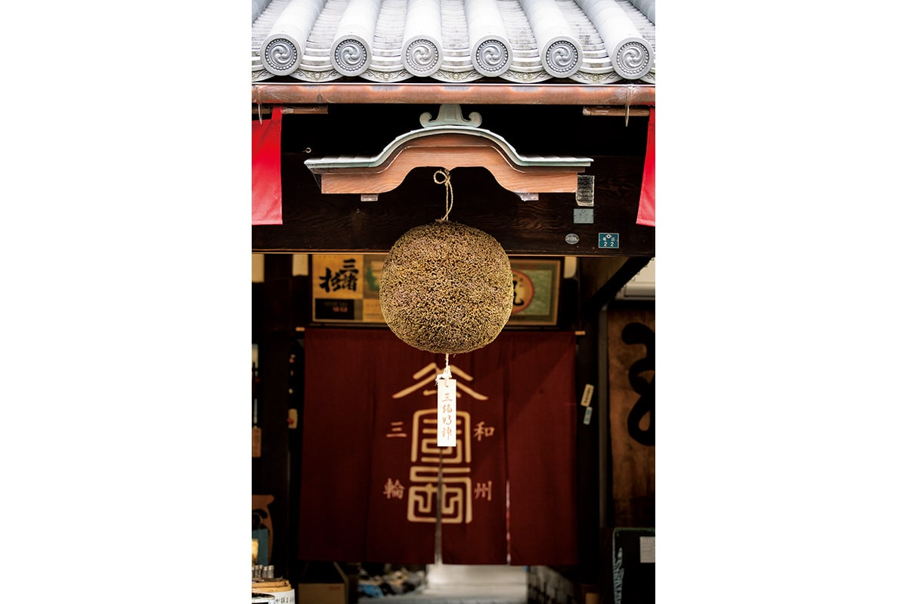
У подножия горы Мива в префектуре Нара стоит святилище, где почитают бога сакэ, и отсюда по всей Японии расходятся шары из криптомерии, которые висят над входом в каждую сакэварню. Глава последней сакэварни Мивы показывает, как через сакэ увидеть самую древнюю Японию.
Святыня
Гора вместо главного зала
Святилище Омива в городе Сакураи называют одним из древнейших в Японии. Божество Омононуси-но Оками пребывает здесь в самой горе Мива, которая поднимается сразу за молельным залом. Поэтому у святилища нет главного зала, привычного для других святилищ: молятся прямо горе. Так почитали богов в те времена, когда в Японии ещё не строили святилищ.
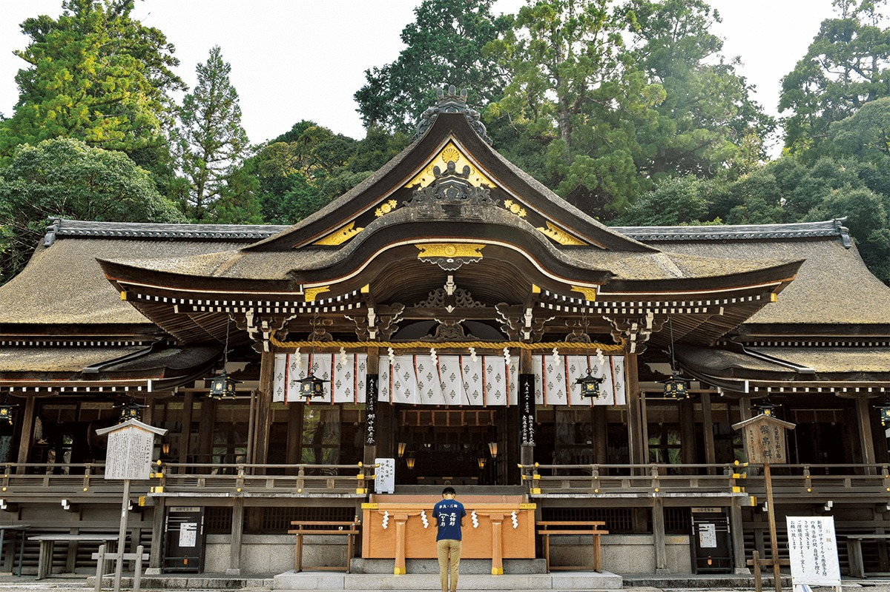
Гору покрывают криптомерии и кипарисы, а криптомерия считается здесь священным деревом. Её воспевали ещё в старинных японских антологиях стихов. Позже появился обычай вешать ветку криптомерии с горы Мива, где обитает сила божества, вместо вывески над сакэварней. Из веток стали вязать шары сугидама, и они превратились в символ сакэ и удачной торговли: сегодня такой шар висит у входа сакэварен по всей стране. Родина сугидама тоже здесь, в Миве.
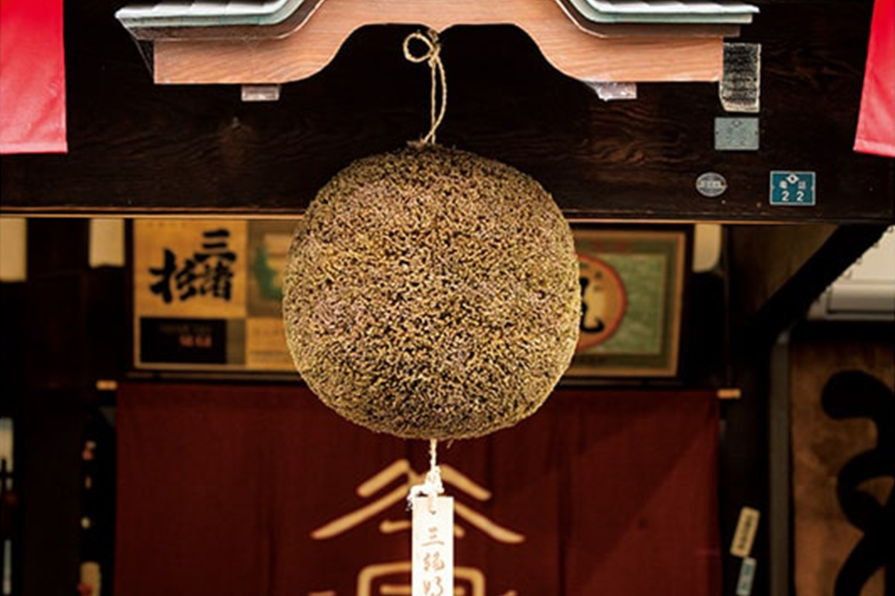
«Сила божества сакэ и торговли, которое обитает на горе Мива, и дала начало сугидама. Цвет шара показывает, насколько созрело сакэ. Когда только готово новое сакэ, шар ярко-зелёный, а к осени он постепенно буреет»
глава сакэварни Imanishi Shuzo
Каждый год 14 ноября в святилище проходит праздник молитвы о благополучной варке, в народе его называют праздником сакэ. Сюда съезжаются владельцы сакэварен, мастера и все, кто связан с сакэ, со всей Японии. Накануне, 13 ноября, большие шары над молельным залом и залом молебнов меняют на свежие, зелёные. Тогда же делают и шары, которые отсюда отправляют в сакэварни и винные лавки всей страны. «Посмотрите на табличку под любым шаром в Японии: на ней написано, что это знак-шар от божества Мивы», говорит глава Imanishi Shuzo.
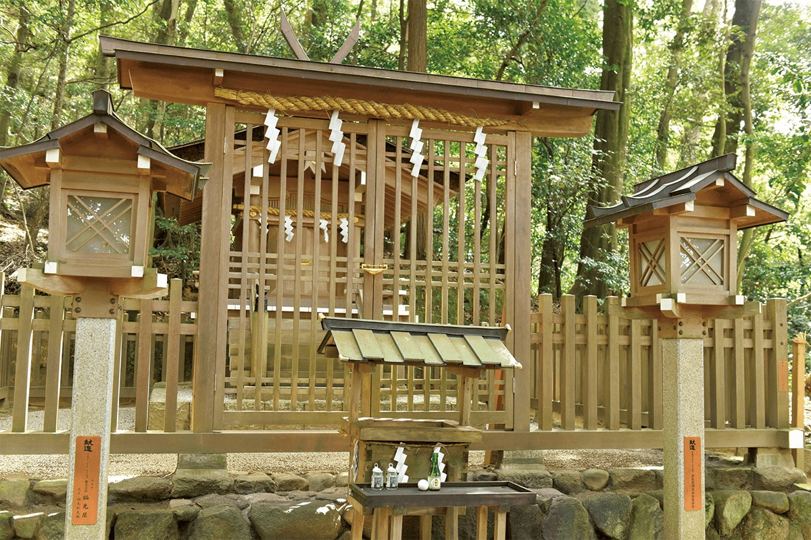
Легенда
Первый мастер сакэ
Омононуси почитают как покровителя ремёсел, врачевания, дорог и мореплавания, брака и вообще человеческого счастья. Почему он стал ещё и богом сакэ, глава сакэварни объясняет так. На территории святилища есть святилище Икухи, единственное в мире, где почитают бога мастеров сакэ. Божество здесь Такахаси Икухи-но микото, древнейший мастер сакэ, о котором сохранились сведения.
По летописи «Нихон сёки», при императоре Судзине, десятом по традиционному счёту правителе Японии, по стране прошёл мор. Во сне императору явился Омононуси и велел сделать жрецом потомка императорского рода и поднести богу сакэ. Император поручил сварить сакэ Такахаси, искусному мастеру, и поднёс его божеству, и мор отступил. Говорят, Такахаси сложил тогда песню: это сакэ сварил не я, а сам бог Омононуси.
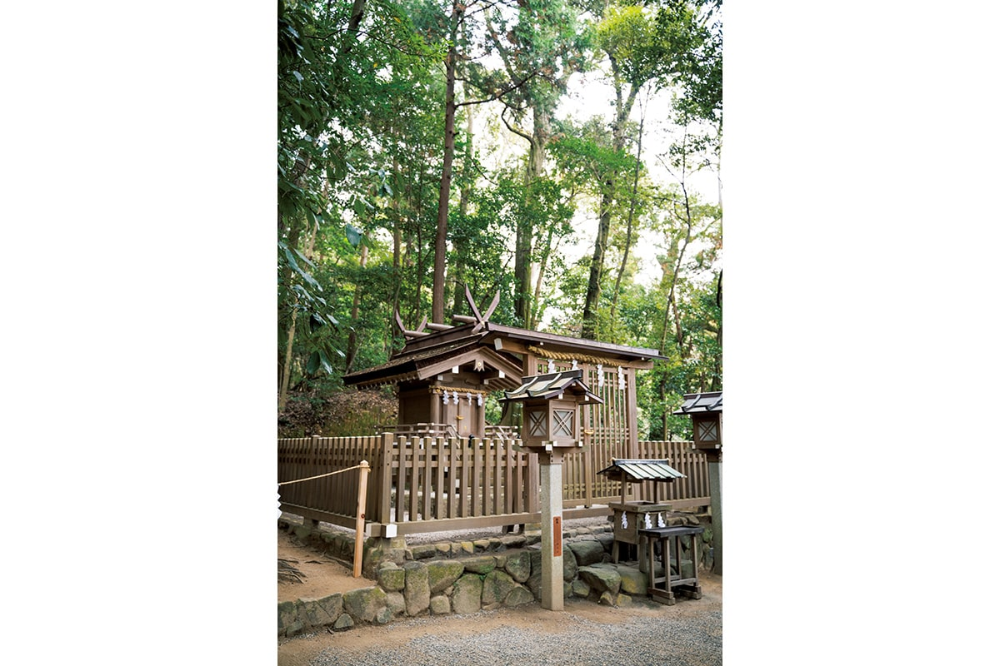
Так Омононуси стали чтить как бога сакэ, а Мива прославилась своим сакэ. На территории святилища есть и святилище Сай, где можно выпить целебной воды, которая, как считается, помогает от всех болезней. Подземные воды горы Мива и стали основой здешнего сакэ.
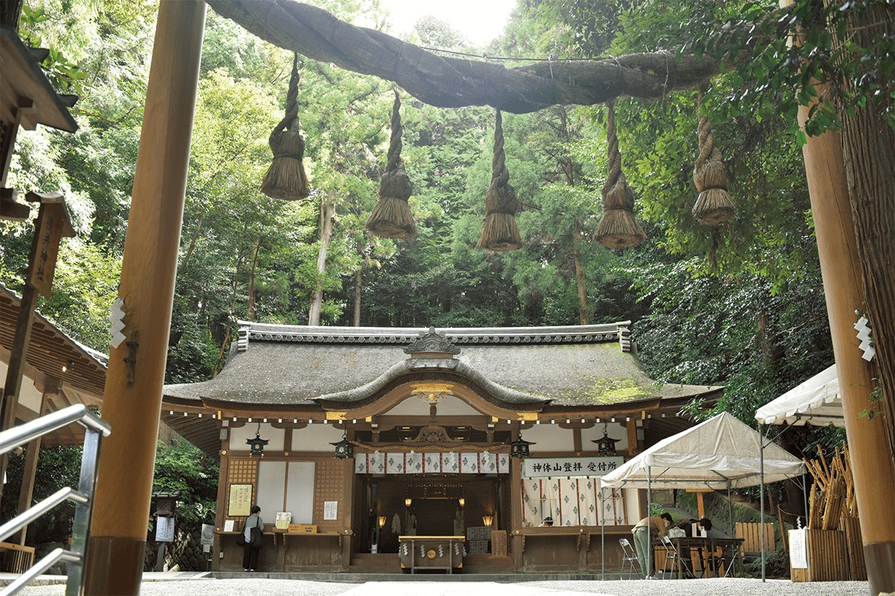
Сакэ тех времён было мутным, неочищенным, его называют доброку. Прозрачное сакэ впервые стали делать позже в храме Сёрякудзи на окраине города Нара, а оттуда, через город Итами под Осакой, его по воде развозили по всей стране. Глава сакэварни уверен, что история японского сакэ начинается именно в Миве. В древности иероглиф «бог» даже читали как «мива»: сакэ существовало для богов, а бог и был Мива.
Сакэварня
Imanishi Shuzo: 14-е поколение у святой горы
Сегодня в Миве осталась одна сакэварня: Imanishi Shuzo. Её основали в 1660 году, и уже больше 360 лет здесь варят сакэ под маркой «Мимуро-суги», которую пишут двумя способами. Нынешний глава, Масаюки Иманиси, представляет 14-е поколение семьи. Он родился и вырос в Миве.
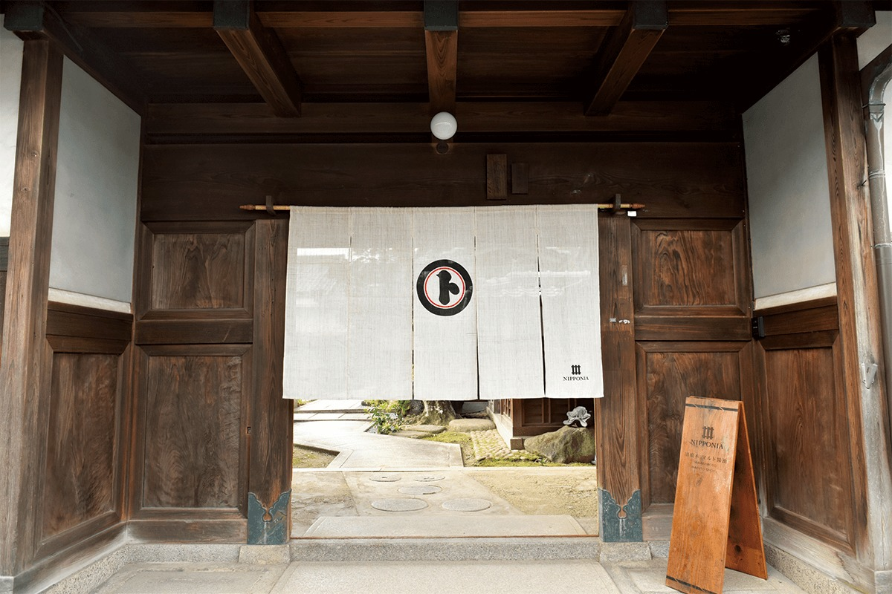
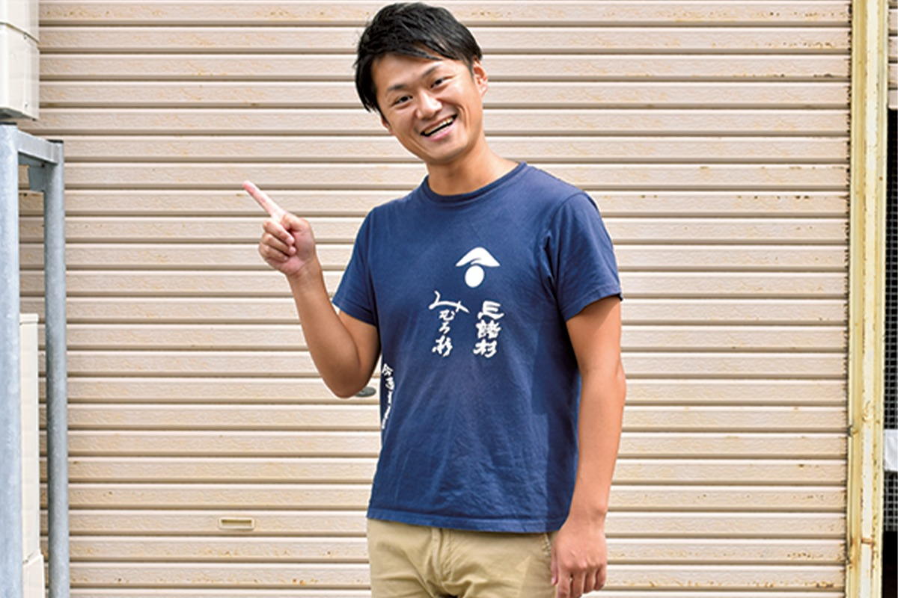
«Это место, где живёт бог сакэ. Поэтому я хочу варить сакэ, в котором чувствовалась бы Мива»
Масаюки Иманиси
Ради вкуса здесь не жалеют труда: даже рис моют небольшими порциями по 10 кг. Сакэ «Мимуро-суги» получало золотую награду на общенациональном конкурсе нового сакэ. В сентябре 2020 года сакэварня открыла отдельное здание для сакэ по старинному методу бодай-мото, с деревянными чанами из криптомерии Ёсино.
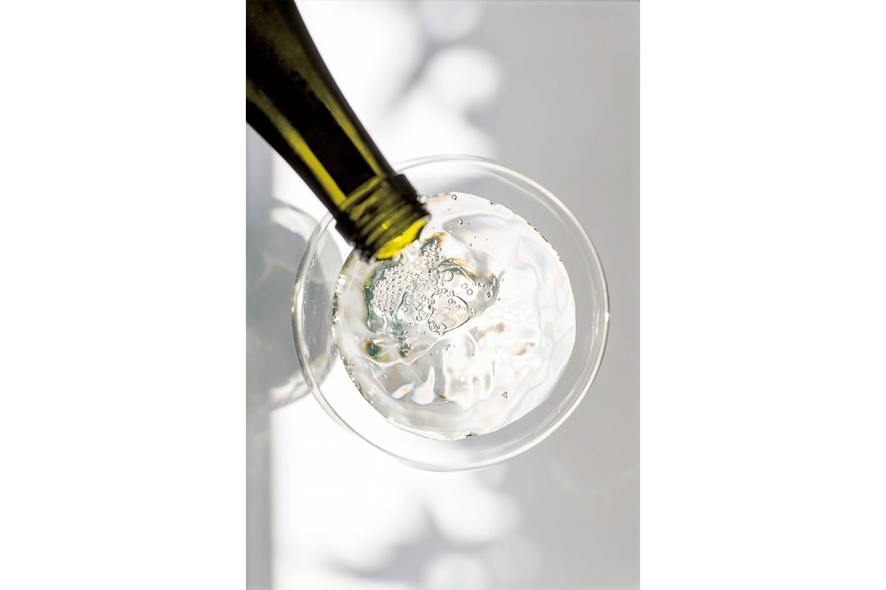
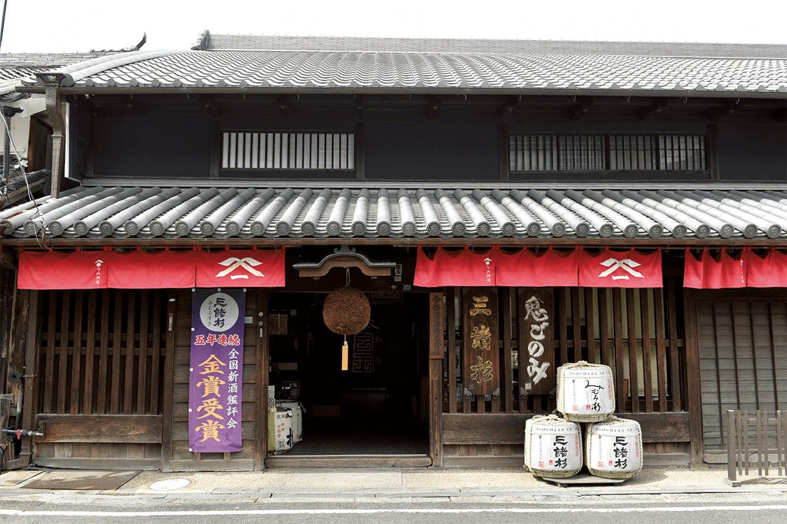
Кроме главного дома, где стоит сама сакэварня, у неё есть магазин на дороге к святилищу. Там продают наборы для подношения и даже мороженое с сакэ. В 2012 году сакэварня начала серию «Мимуро-суги Роман», которую продают только через избранные магазины.
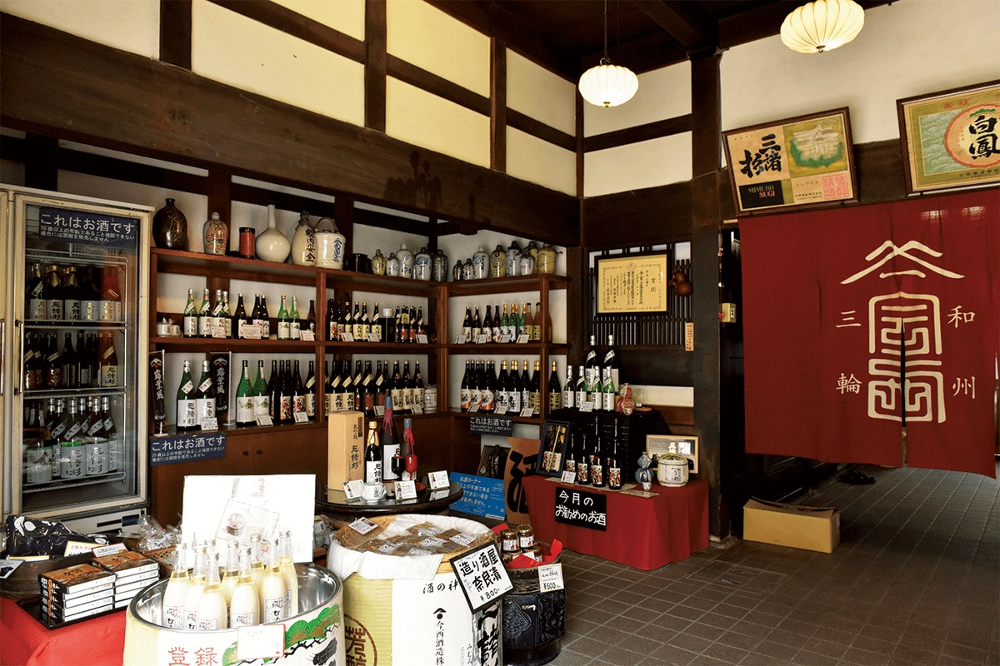
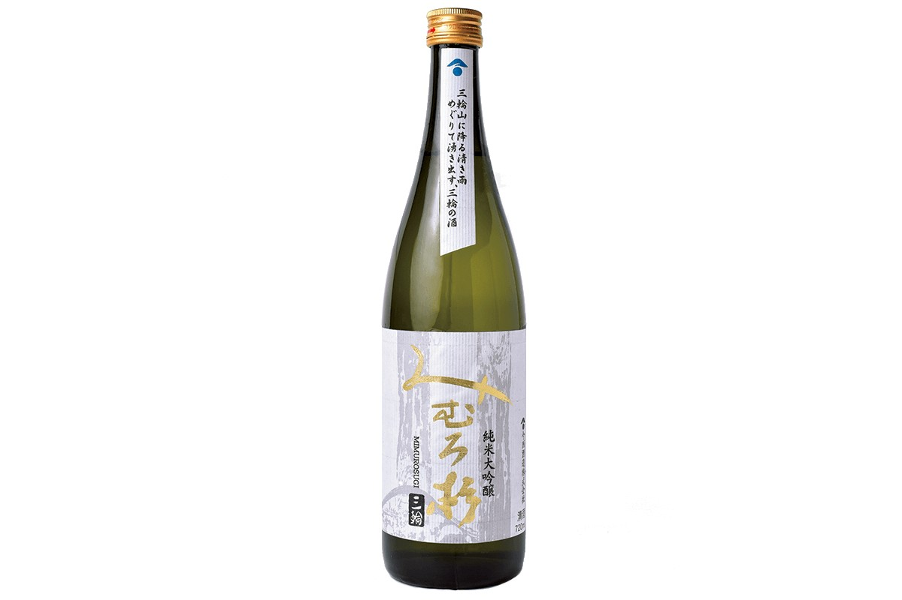
Осеннее сакэ хияороси
Когда приближается осень, сакэварни выпускают хияороси. Это сакэ, сваренное зимой: его один раз нагревают для сохранности, а потом выдерживают до осени и разливают в бутылки прямо из чана, не подогревая второй раз. Сакэ, которое так долго выдерживали, мягче и спокойнее нового. Его чаще пьют комнатной температуры или подогретым, и оно хорошо идёт к осенней еде: сайре, грибам.
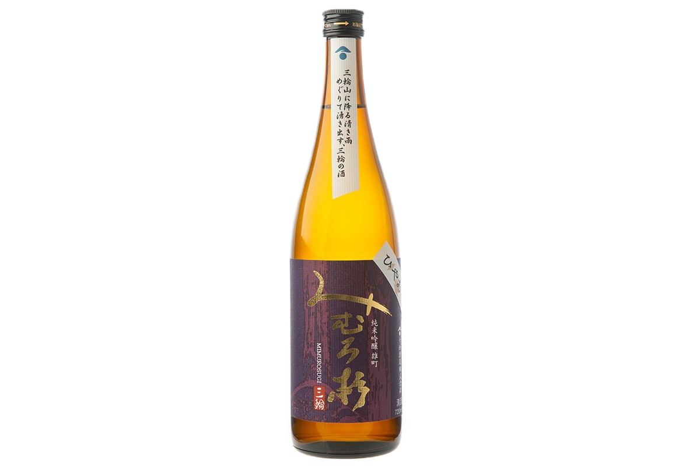
Осенняя версия «Мимуро-суги» сварена на подземной воде горы Мива и только из риса сорта омати, отшлифованного до 60%. После выдержки при низкой температуре в ней есть и сладость, и полнота, типичные для омати. Вкус сочный, но в горле исчезает чисто, а в аромате слышна дыня. Крепость 15 градусов.
Imanishi Shuzo
- Адрес
- префектура Нара, Сакураи, Мива, 510
- Телефон
- +81 744-42-6022
Маршрут
Два дня в краю Тюва
Мива лежит в краю Тюва, в средней части префектуры Нара. Здесь, по преданию, возникли сумо, японский буддизм, театр но и рынки, отсюда начиналось японское государство. Но сам край о своём прошлом молчит. «Идёшь по дороге и натыкаешься на историю», говорит Масаюки Иманиси, и добавляет, что если просто гулять, глубину не разглядишь. Экскурсии в сакэварне он и устраивает, чтобы люди узнали историю и культуру за сакэ.
«Мне хочется, чтобы здесь почувствовали не историю, а сам дух места: то, ради чего всё это передавалось здесь из века в век. Этот пейзаж почти не тронут, и такой воздух есть только в Тюва, а не в туристических местах Нары»
Масаюки Иманиси
Все места его маршрута, кроме храма Сёрякудзи, лежат в пределах 15 минут на машине. По субботам и воскресеньям бывает людно, но места просторные, и ждать долго не приходится. Ужин нужно бронировать заранее.
День первый: святилище и сакэварня
Поезд приходит на станцию Мива в 13:45, а в 14:00 начинается экскурсия сакэварни от святилища Омива до Imanishi Shuzo и обратно. Не забудьте купить набор из яиц и сакэ для подношения.
Святилище Омива
- Адрес
- префектура Нара, Сакураи, Мива, 1422
- Телефон
- +81 744-42-6633
- Часы работы
- 9:00–17:00
- Выходные
- нет
- Сайт
- oomiwa.or.jp
15:30 Сладости «Сиратамая Эйдзю»
Лавка японских сладостей «Сиратамая Эйдзю» открылась в 1844 году, когда здесь встречали сладким паломников на дороге к святилищу. При лавке есть чайная. Главная сладость, монака «Мимуро», делается так же, как в день основания, и бывает двух размеров. Местные жители чаще всего несут её в подарок.
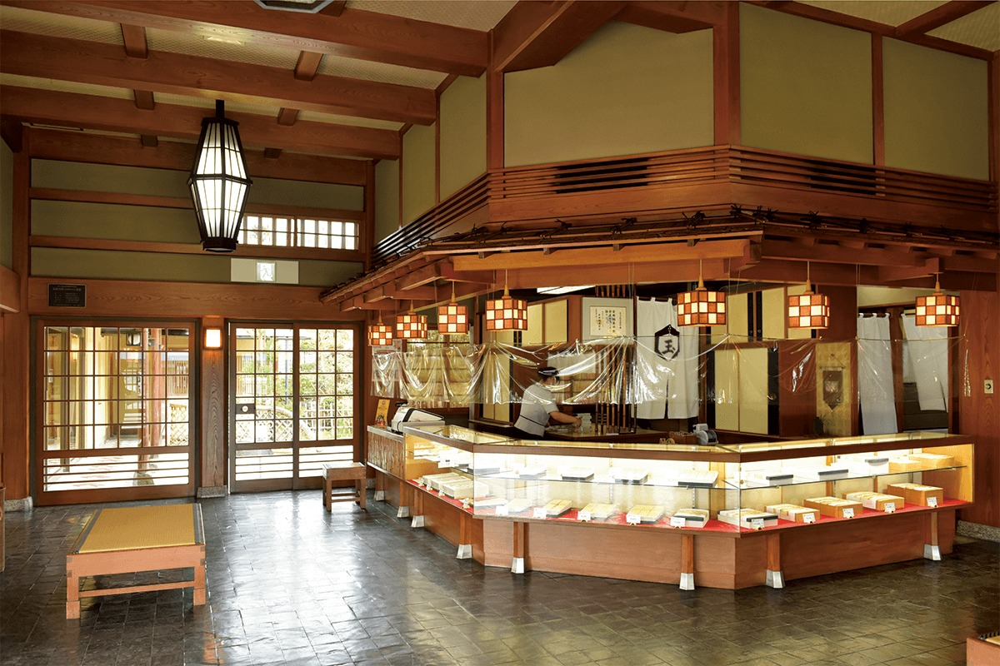
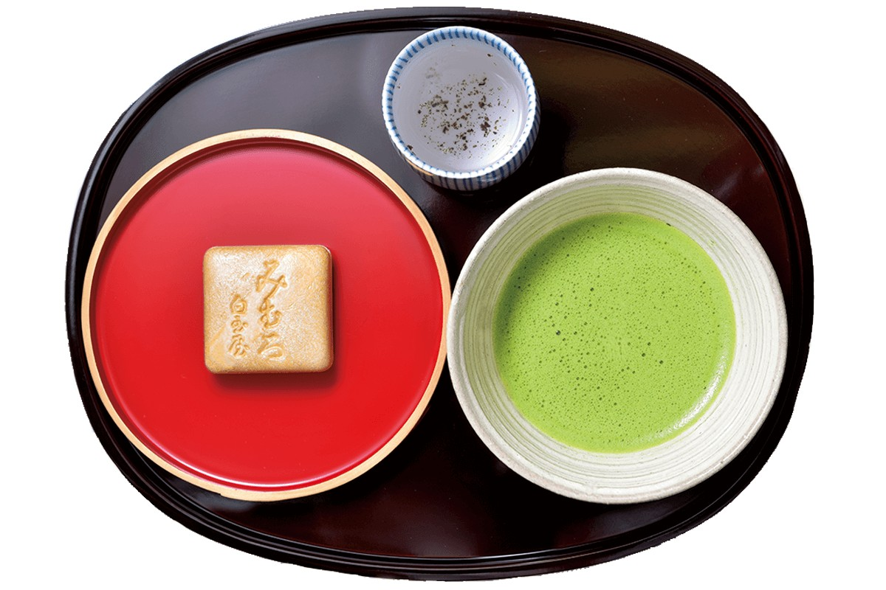
Монаку подают не сразу после сборки: паста должна сначала сродниться с вафлей. Хранится она неделю, так что её удобно увезти домой.
«Сиратамая Эйдзю»
- Адрес
- префектура Нара, Сакураи, Мива, 660-1
- Телефон
- +81 744-43-3668
- Часы работы
- 8:00–19:00, чайная 10:00–18:00
- Выходные
- понедельник (если праздник, то вторник), третий вторник месяца (1-го числа открыто)
18:00 Ужин в «Адзи-но-кадзэ Нисимура»
Ресторан японской кухни «Адзи-но-кадзэ Нисимура» в 2020 году имел звезду «Мишлен». Места только за стойкой, поэтому бронь обязательна. Есть два сета: за 7700 иен, который можно заказать в тот же день, и за 11 000 иен только по предварительной брони (цены 2020 года). Около восьми блюд, от закуски и супа до сашими, жареного и десерта, строятся на местном рисе и овощах Нары, вплоть до фасоли адзуки. Меню меняется каждый месяц. Вкус глубокий и спокойный, но каждая тарелка чем-то удивляет.
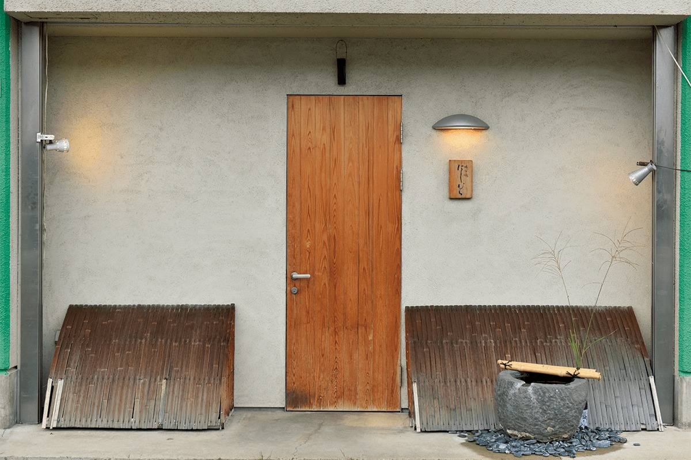
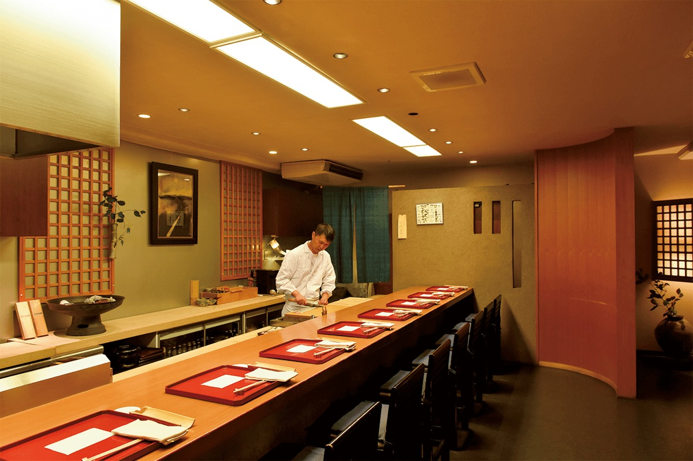
Здесь видно, каким стало сакэ, которое веками пили за обычной едой. В сете всегда есть тушёная сельдь с баклажаном. Её приправляют только водой, сакэ и щепоткой чёрного сахара, чтобы не заглушить сакэ, и с бокалом вкус продуктов становится ещё яснее.
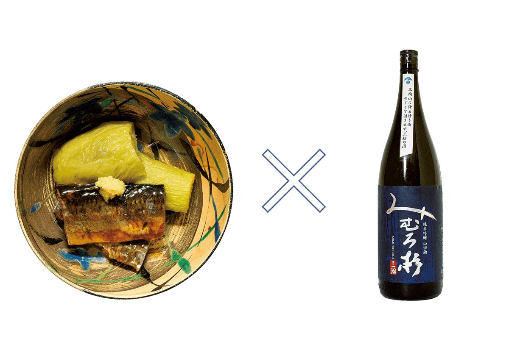
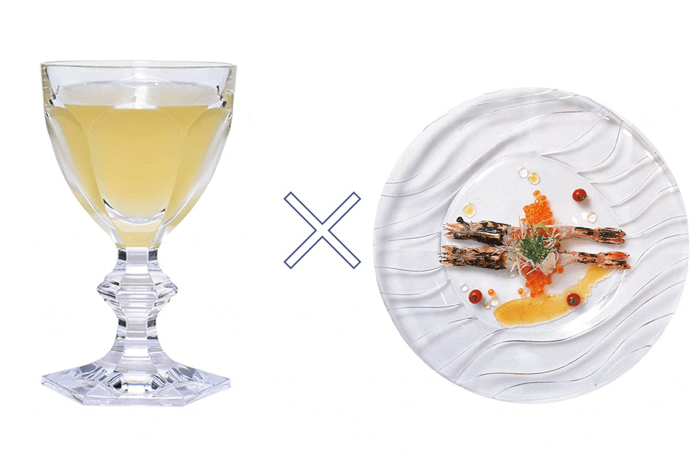
«Адзи-но-кадзэ Нисимура»
- Адрес
- префектура Нара, Сакураи, Оодоно, 1023-3, Sumiyoshi Heights, 1-й этаж
- Телефон
- +81 744-42-7773 (бронь обязательна)
- Часы работы
- 11:30–, 18:00–20:30 (последний заказ)
- Выходные
- понедельник
21:00 THE SAILING BAR
Второе место вечера, THE SAILING BAR, спрятано на последнем этаже обычного здания. Кроме западного алкоголя здесь большой выбор вина и сакэ, есть и сеты из нескольких блюд.
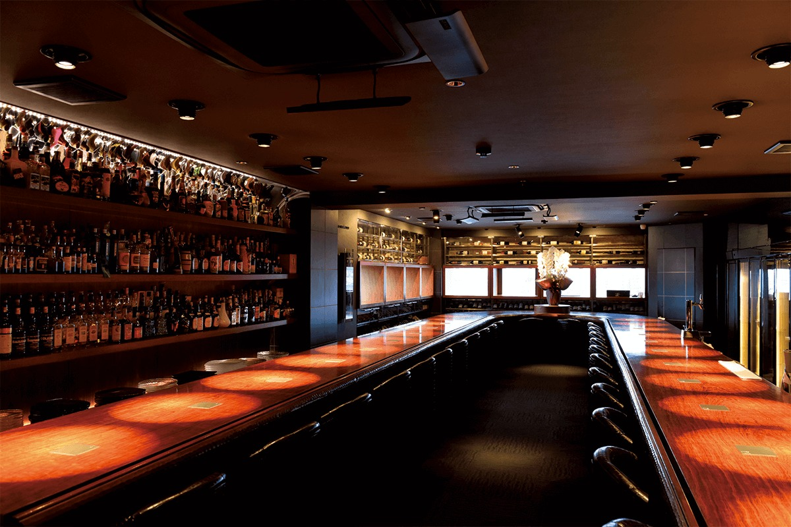
THE SAILING BAR
- Адрес
- префектура Нара, Сакураи, Киби, 564-3, SHR Building, 5-й этаж
- Телефон
- +81 744-49-0040
- Часы работы
- 18:00–1:00 (последний заказ)
- Выходные
- нет
- Сайт
- sailing-bar.com
23:00 Ночь в UHN Nara Maruto Shoyu
Гостиница UHN Nara Maruto Shoyu (до 2026 года NIPPONIA Tawaramoto Maruto Shoyu) устроена в старейшей соевой пивоварне Нары. В ней семь номеров, и все спланированы по старым складам: есть номера в доме, где ночевали мастера, и в бывшем хранилище сырья. Соевый соус «Маруто» когда-то поставляли императорскому двору, и теперь его производство возродили.
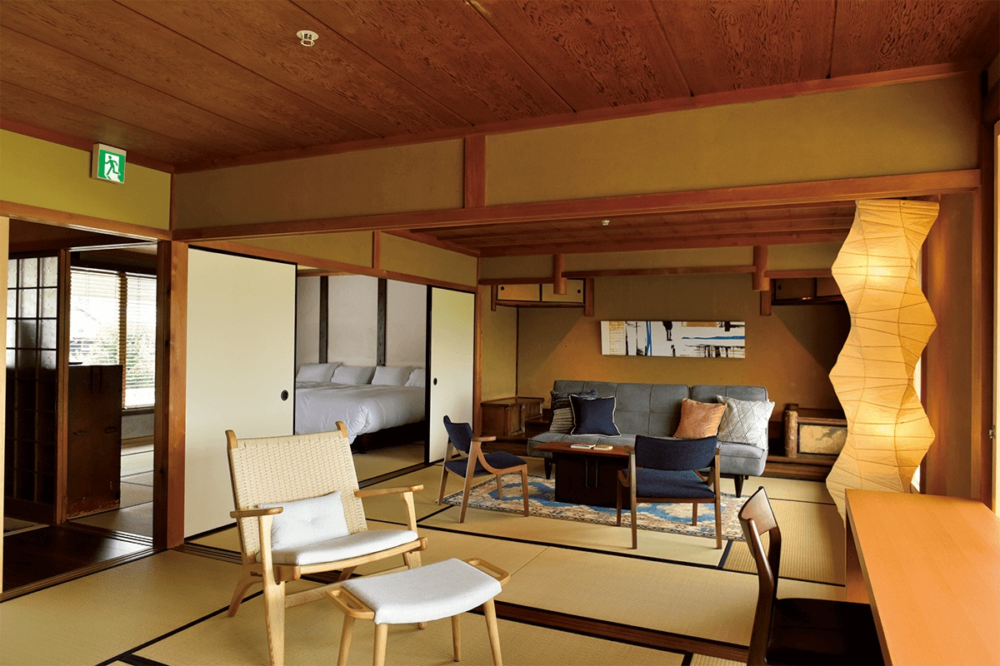
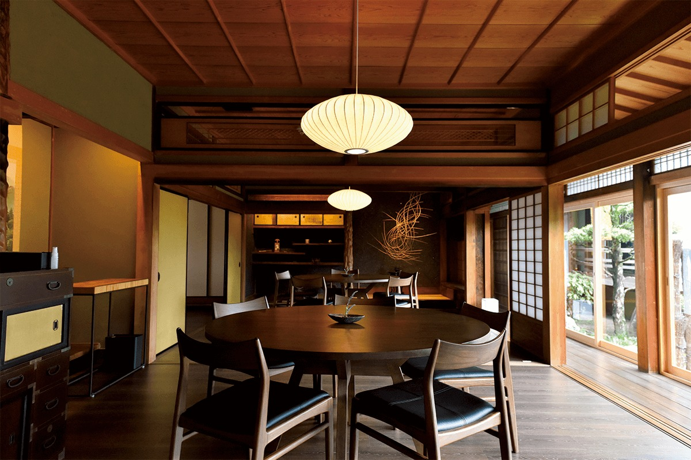
Обязательно попробуйте рис с соусом анкакэ на соевом соусе «Маруто» естественного брожения: впервые за 70 лет его сделали из сырья, выращенного в самом Таварамото. Гостям предлагают осмотреть пивоварню и самим отжать соевый соус, а утром за завтраком подают только что отжатый соус (по предварительной записи).
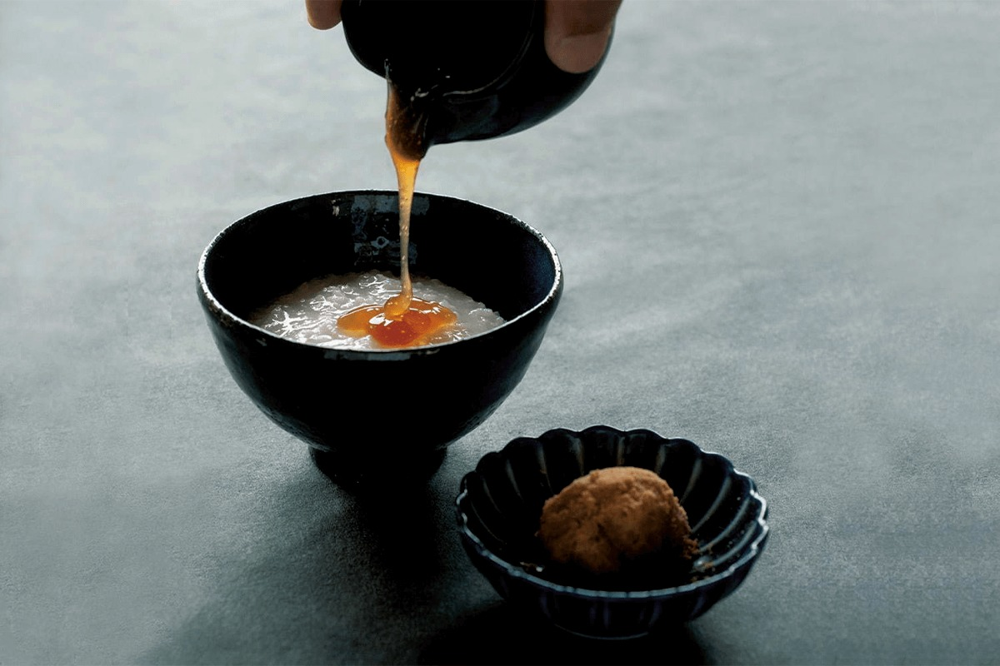
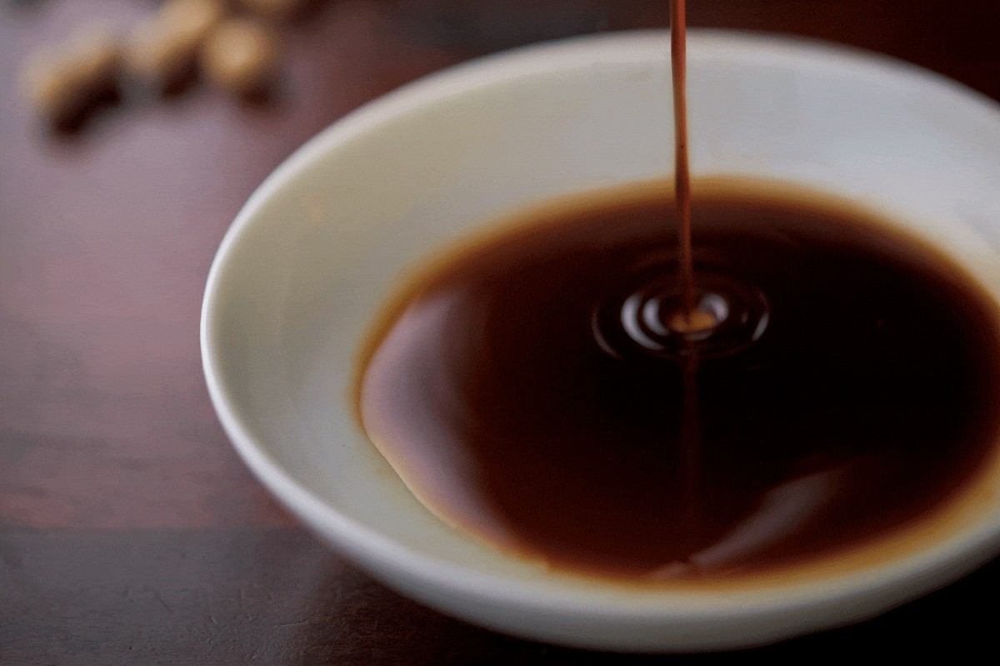
UHN Nara Maruto Shoyu (бывшая NIPPONIA Tawaramoto Maruto Shoyu)
- Адрес
- префектура Нара, уезд Сики, Таварамото, Иёдо, 170
- Телефон
- +81 744-32-2064
- Цены / Вход
- от 51 000 иен за номер на двоих с завтраком, с налогом и обслуживанием
День второй, 12:00: обед в Miwa Yamamoto
Компании Miwa Yamamoto больше 300 лет, она делает тонкую лапшу сомэн. Из специальной пшеницы здесь тянут сверхтонкие сорта «Хакурю» и «Итоёри», которые меняют представление о сомэн. При компании есть ресторан и магазин.
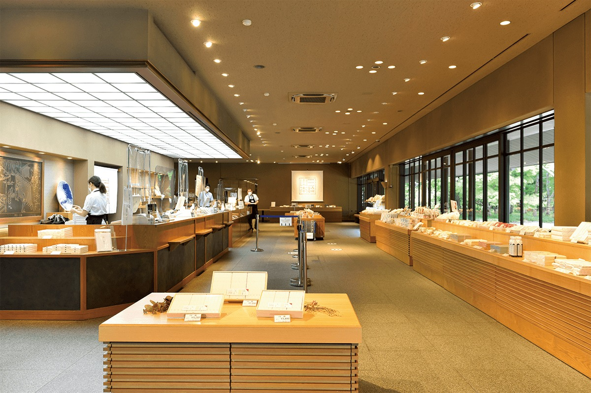
Горячая лапша нюмэн сварена из «Итоёри премиум» двухлетней выдержки. Лапша, которая пролежала до следующего сезона и дольше, медленно разваривается, и в ней хорошо слышен вкус самой сомэн. К ней берут суши в листьях хурмы, инари и суши дня.
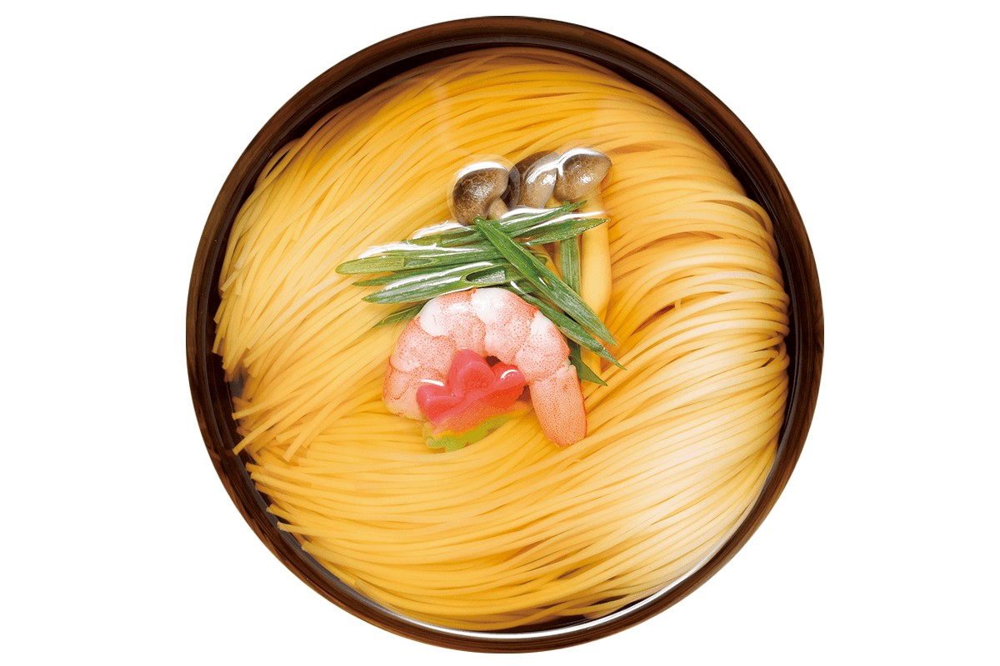
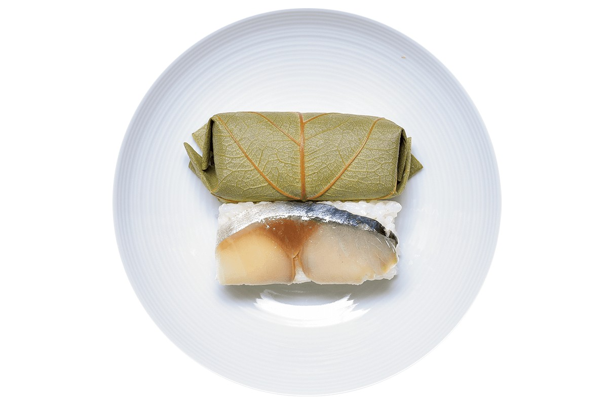
Miwa Yamamoto
- Адрес
- префектура Нара, Сакураи, Хасинака, 880
- Телефон
- +81 744-44-2001
- Часы работы
- магазин 10:00–17:00 (с сентября по март до 16:30), ресторан 11:00–15:00 (последний заказ)
- Выходные
- с сентября по март иногда по понедельникам
- Сайт
- miwayama.co.jp
15:00 Храм Сёрякудзи на горе Бодайсан
Храм Сёрякудзи считают родиной прозрачного сакэ, и до сих пор каждый январь здесь закладывают закваску. Храм стоит среди гор, будто между двумя драконами, и осенью его территорию заливают клёны: место даже зовут «Нисики-но сато», деревней парчи. Главный зал, восстановленный в 1916 году, тоже стоит посмотреть.
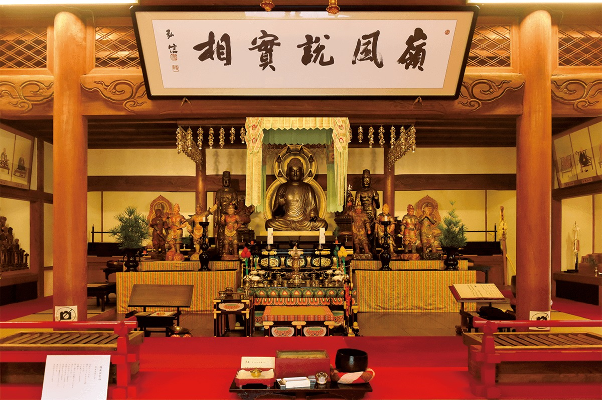
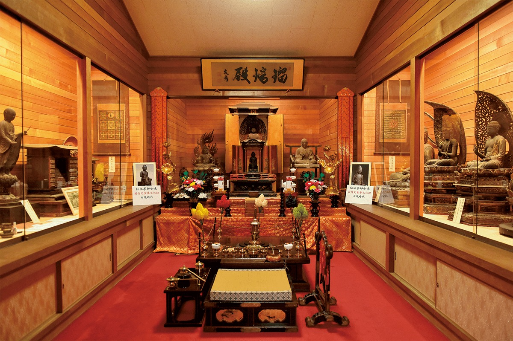
Гостевой зал Фукудзюин построен в стиле чайного павильона, а росписи на раздвижных дверях и резные панели над ними сделал Эйно Кано (1631–1697), художник школы Кано, которая веками писала для сёгунов и знати. Здесь же сад с видом на окрестные горы.
Храм Сёрякудзи
- Адрес
- префектура Нара, Нара, Бодайсан-тё, 157
- Телефон
- +81 742-62-9569
- Часы работы
- 9:00–17:00, с декабря по февраль до 16:00
- Цены / Вход
- 500 иен
- Сайт
- shoryakuji.jp
«Просто пройтись здесь мало: многое понимаешь, только когда узнаёшь. Но эта поездка меняет взгляд. Может, на месте вы этого и не почувствуете, но когда вернётесь в город Нара, точно заметите разницу»
Масаюки Иманиси
Фото: Киёси Нисиока, Кадзуя Хаяси, Аканэ Ямакита.